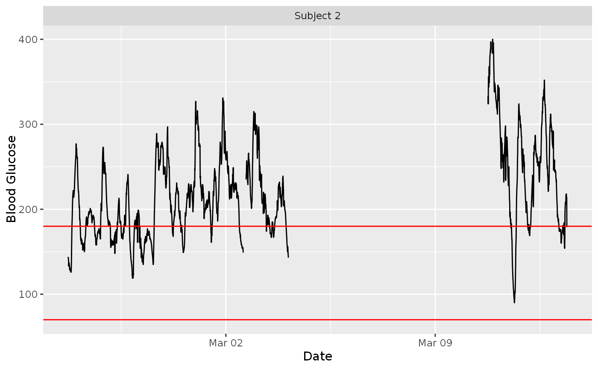
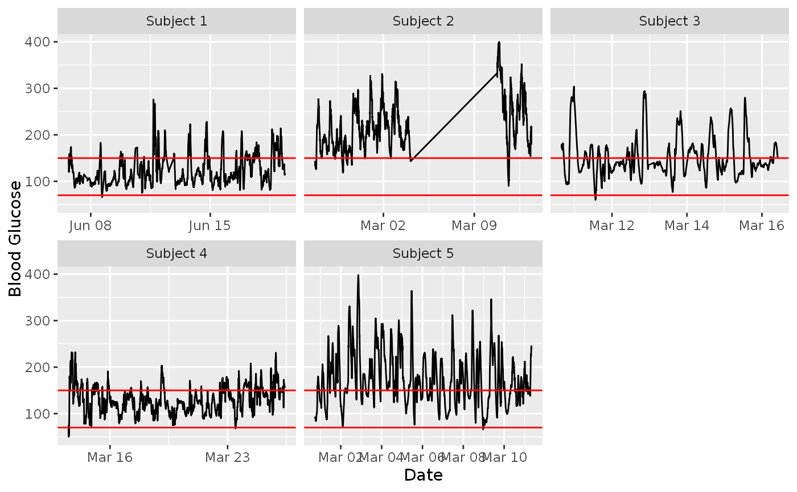
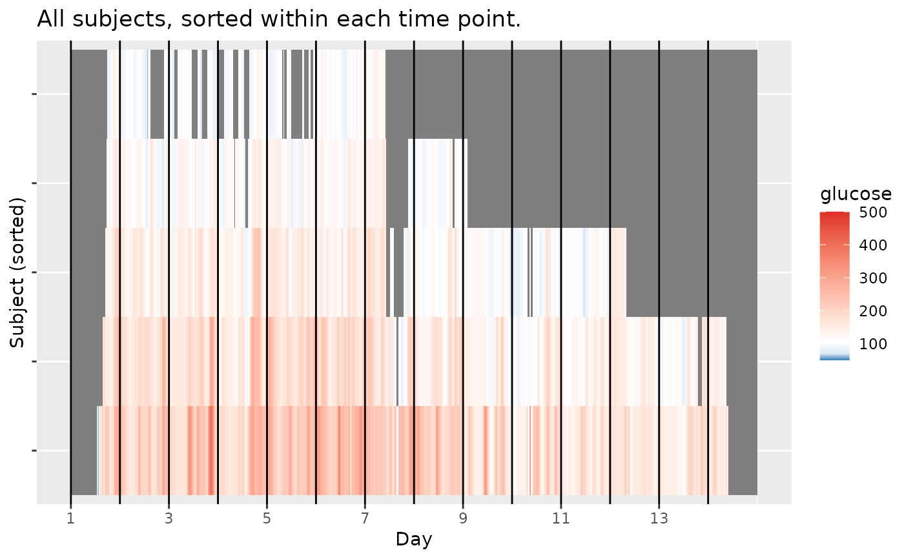
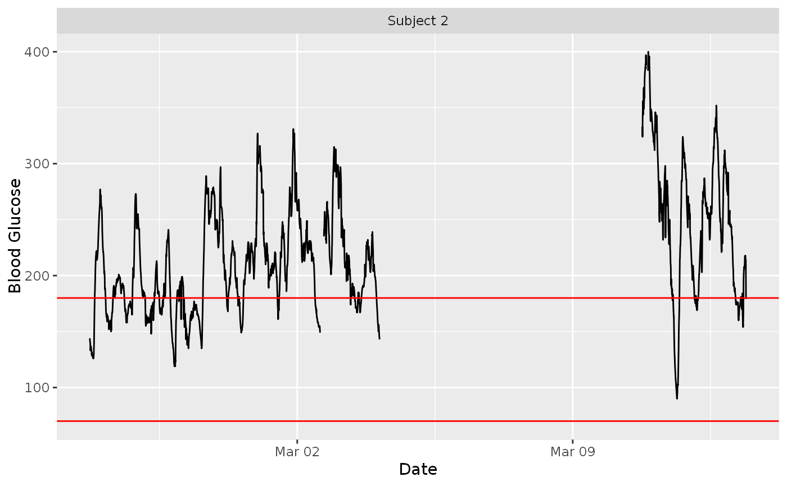
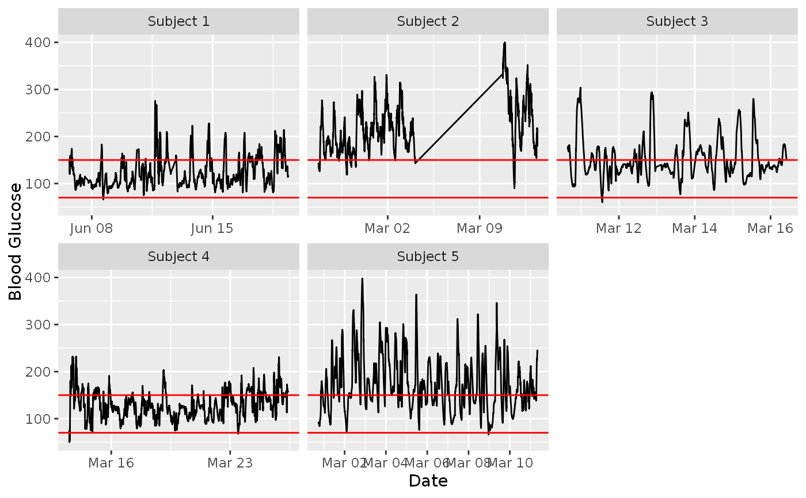
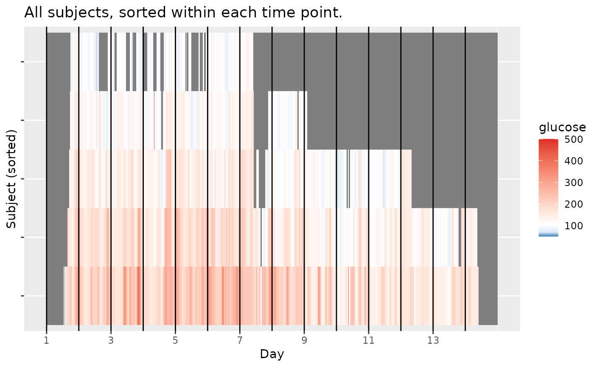

Plot time series and lasagna plots of glucose measurements
plot_glu.RdThe function plot_glu supports several plotting methods for both single and multiple subject data.
Arguments
- data
DataFrame with column names ("id", "time", and "gl").
- plottype
String corresponding to the desired plot type. Options are 'tsplot' for a time series plot and 'lasagna' for a lasagna plot. See the `lasagnatype` parameter for further options corresponding to the 'lasagna' `plottype`. Default is 'tsplot'.
- datatype
String corresponding to data aggregation used for plotting, currently supported options are 'all' which plots all glucose measurements within the first
maxddays for each subject, and 'average' which plots average 24 hour glucose values across days for each subject- lasagnatype
String corresponding to plot type when using
datatype = "average", currently supported options are 'unsorted' for an unsorted lasagna plot, 'timesorted' for a lasagna plot with glucose values sorted within each time point across subjects, and '`subjectsorted`' for a lasagna plot with glucose values sorted within each subject across time points.- LLTR
Lower Limit of Target Range, default value is 70 mg/dL.
- ULTR
Upper Limit of Target Range, default value is 180 mg/dL.
- subjects
String or list of strings corresponding to subject names in 'id' column of data. Default is all subjects.
- inter_gap
The maximum allowable gap (in minutes). Gaps larger than this will not be connected in the time series plot. The default value is 45 minutes.
- tz
A character string specifying the time zone to be used. System-specific (see
as.POSIXct), but " " is the current time zone, and "GMT" is UTC (Universal Time, Coordinated). Invalid values are most commonly treated as UTC, on some platforms with a warning.- color_scheme
String corresponding to the chosen color scheme when the `plottype` is 'lasagna'. By default, 'blue-red' scheme is used, with the values below `LLTR` colored in shades of blue, and values above `ULTR` colored in shades of red. The alternative 'red-orange' scheme mimics AGP output from
agpwith low values colored in red, in-range values colored in green, and high values colored in yellow and orange.- log
Logical value indicating whether log10 of glucose values should be taken, default value is FALSE. When log = TRUE, the glucose values, LLTR, and ULTR will all be log transformed, and time series plots will be on a semilogarithmic scale.
Value
Any output from the plot object
Details
For the default option 'tsplot', a time series graph for each subject is produced with hypo- and hyperglycemia cutoffs shown as horizontal red lines. The time series plots for all subjects chosen (all by default) are displayed on a grid.
The 'lasagna' plot type works best when the datatype argument is set to average.
Examples
data(example_data_1_subject)
plot_glu(example_data_1_subject)
 data(example_data_5_subject)
plot_glu(example_data_5_subject, subjects = 'Subject 2')

plot_glu(example_data_5_subject, plottype = 'tsplot', tz = 'EST', LLTR = 70, ULTR = 150)

plot_glu(example_data_5_subject, plottype = 'lasagna', lasagnatype = 'timesorted')

data(example_data_5_subject)
plot_glu(example_data_5_subject, subjects = 'Subject 2')

plot_glu(example_data_5_subject, plottype = 'tsplot', tz = 'EST', LLTR = 70, ULTR = 150)

plot_glu(example_data_5_subject, plottype = 'lasagna', lasagnatype = 'timesorted')
